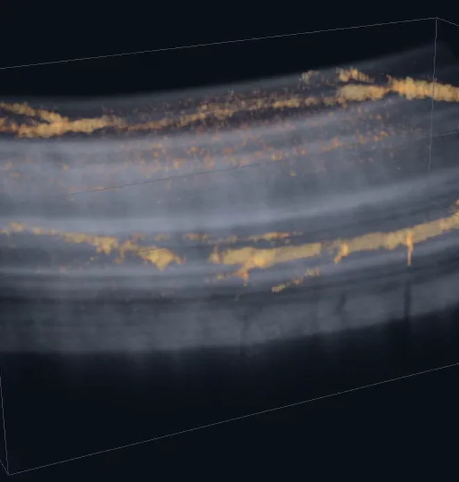
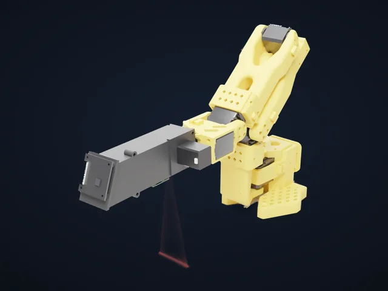
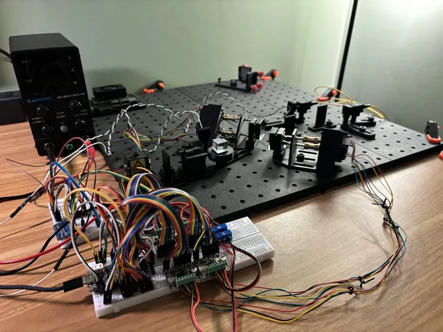
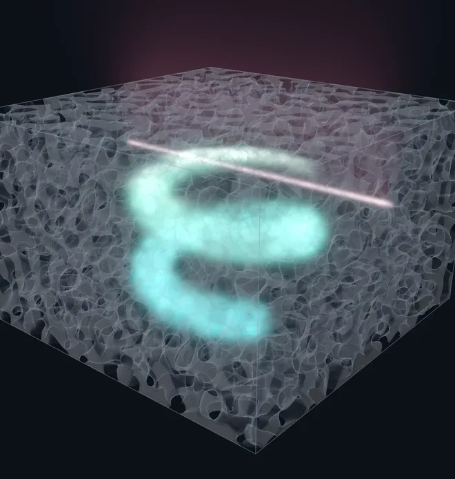
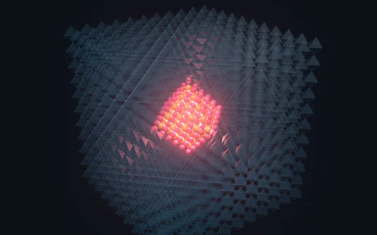
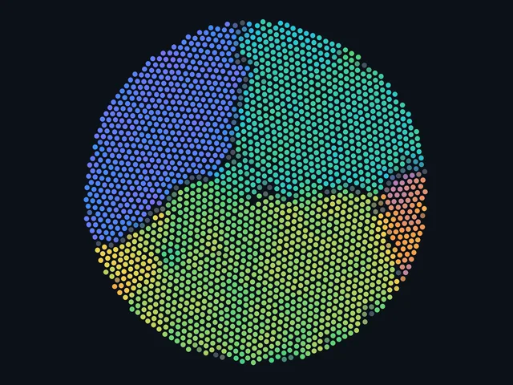

Optical systems, robotics & spectroscopy
Retinal OCT, hyperspectral robotic perception, a snapshot hyperspectral camera, a self-aligning fiber bench and printed optomechanics.



Materials science
Materials for multiphoton lithography, quantum dot in perovskite based scintillators, nanodiamond tags and nanoparticle self-assembly.
Patents, publications and talks
- US Prov. 64/170,470Interactive user interface for precise galvanometer positioning and fixation steering in line-field OCTKineoLabs, filed Oct 2026
- US Prov. 64/167,159Ultra-fast modality switching and interleaved display in line-field swept-source OCTKineoLabs, filed Oct 2026
- Co-authored talkLow-cost, high-performance line-field swept-source OCT as an affordable, versatile system architecture in both research and clinical applicationsJustin V. Migacz, Ryan Vincent, Nate West, Joseph G. Houston, Walid AtiaHelsinki Vision, Sep 2026
- US Prov. 64/077,487Free-space multimodal ophthalmic imaging system combining line-field swept-source OCT and line-scanning laser ophthalmoscopyKineoLabs, filed May 2026
- WO2025235812A1Systems and methods for integrated free-space optical elements and devicesIrradiant Technologies, Nov 2025
- Co-authored paperLithographically aligned 3D optical microsystems with high gradient index contrastAmos Meeks, Natalie Nicolas, Soroush Shabahang, Zhenle Cao, Ryan Vincent, Shielan Sinjari, Daniel OranProc. SPIE 13381, Mar 2025
- US 2025/0060689 A1Producing identity markers by electrostatic printingDUST Identity, Feb 2025
- Talk3D Nanofabrication using Multiphoton Lithography in Nanoporous Silica ScaffoldsMarshall University, Dec 2024
- M.S. thesisDevelopments Towards High-Flux Silica Nanosphere Substrates to Support Conforming Self-Assembled Gold Nanoparticle Monolayers for Applications in Size-Selective FiltrationMarshall University, Dec 2019
- TalkSize Selective Filtration Using Gold Nanoparticle Self-Assembled Monolayers on High-Flux Silica Nanoparticle SubstrateA-AAPT Fall Meeting, Nov 2019
- TalkDevelopments towards a high-flux silica nanoparticle substrate for conforming self assembled nanoparticle arraysMarshall Physics Convocation Day, Apr 2019
- TalkSize Control and Monodispersity of Silica Nanospheres and Applications in NanofiltrationAPS March Meeting, Mar 2019
- Co-authored articleA Week of Physics “Phun” at Marshall UniversitySean P. McBride, Jon Keaton, Ryan VincentSPS Observer, Winter 2019
- PosterSelf-Assembled Monolayers and Applications in FiltrationAppalachian Fresh Water Initiative All-Hands Meeting, College of Science Research Expo and Physics Department Convocation DayMarshall University, Apr to Jun 2018